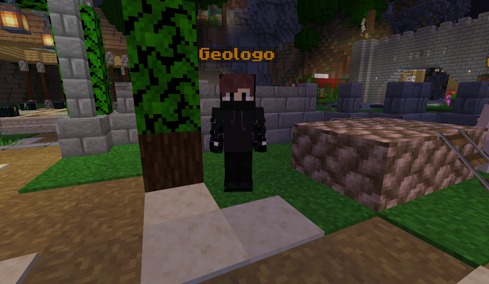

Mision del Geologo
Este geologo te pedira cosas sobre minado, desde hierro hasta obsidiana

Mision - Herrero
Este herrero te pedira solo 10 de acero valyrio, cosa facil para obtener en el rpg

Misionn - Guardia
Esta mision puede ser la mas dejada de todas, ya que requiere matar 10 jugadores

Mision - Brujo
Esta mision puede ser facil, pero te llevara tiempo, pues tienes que matar desde zombis, esqueletos hasta endermans y el ender dragon.
Al final te dara 10 de oricalco, objeto con el que podras craftear la armadura final.

Mision - Explorador
Esta mision puede que sea la mas facil de todas, pues esta mision tan solo pide que vayas hasta el nivel 5 del rpg

Mision - Cazador
Esta mision es una de las mas faciles, pues te pedira que mates zombi momificados.